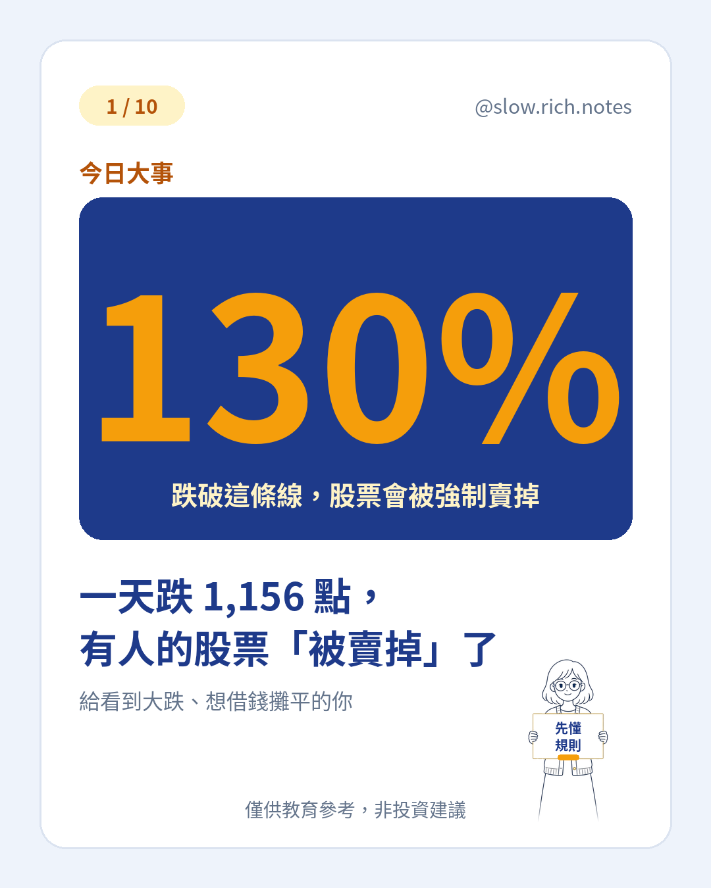

刷到「一天跌一千多點」、心裡一沉，又聽到有人股票「被賣掉」？先喘口氣——標題可以聳，答案可以冷靜。10/30 台股約跌 1,156 點、盤中最多約 1,642 點，收約 45,211、跌破半年線；融資維持率報導約從 178% 掉到 172%，新聞開始講「160% 生死線」。（數字為約數，會變動。）
融資是什麼？白話就是跟券商借錢買股票：上市股大約自備四成、借六成，賺賠都會被放大。維持率＝股票市值 ÷ 借款；剛買時多在約 166% 附近，股價跌，維持率跟著掉。跌破約 130%，券商會發追繳，要你在期限內（約兩個營業日）把維持率補回規定水準；補不出錢，就是斷頭——券商直接賣出你的股票還款，賣在低點、虧損變真的，沒有「等它漲回來」。
大跌時很多人一起被斷頭，賣壓更重，又可能再推低股價。還有人借信貸去買正 2——那是槓桿上再加槓桿。帶回去一句：「市場能撐得比你久。」新手第一課不是賺多少，是不被淘汰：不借錢、不用槓桿、只用閒錢。
想把基礎補齊，可先看 看不懂財經新聞？先學這 10 個詞，以及同在談「錢的價錢」的 你的房貸，正在被偷偷加價。現金流怎麼排，可對照 月薪也能慢慢存起來。準備好了再領 《投資新手入門清單》。
僅供教育參考，非投資建議；數字為約數、會變動；借款與投資皆有風險，可能損失本金。
⚠️ 僅供教育參考，非投資建議。文中若有數字，皆為假設例子，請依自己的狀況調整。投資有風險，請自行評估。